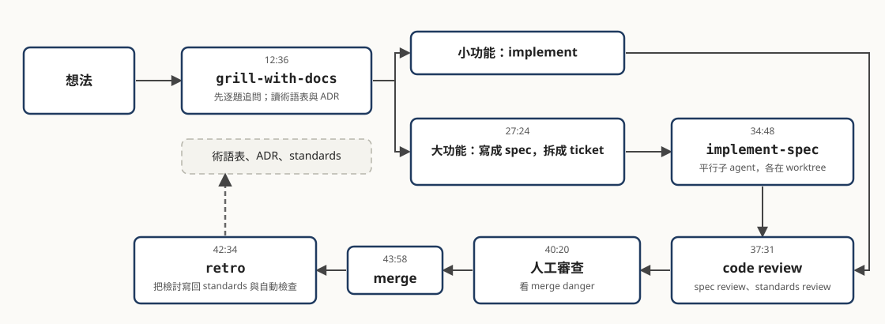
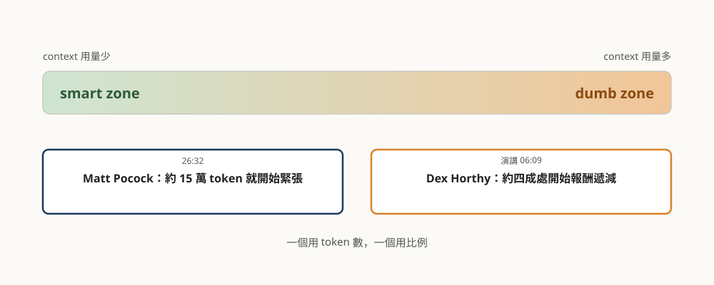
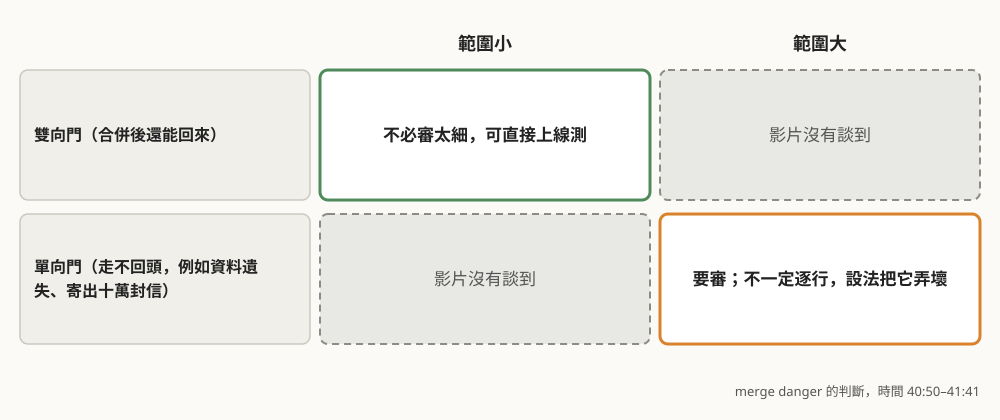
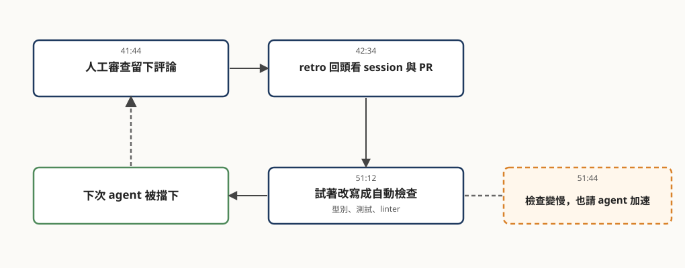
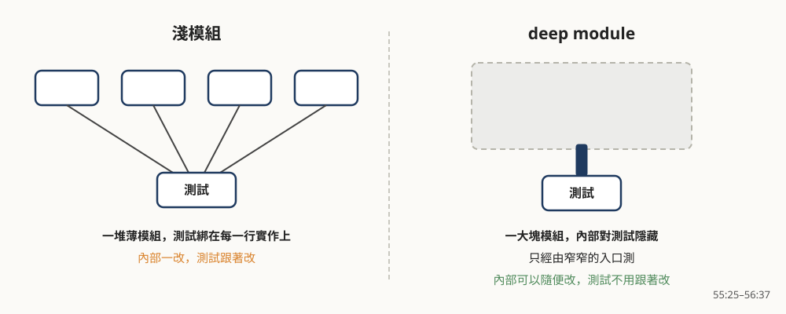

主持人 NetworkChuck（下稱 Chuck）一開場就把全片的問題丟出來：現在還有人需要學特定的程式語言嗎？（00:02）來賓 Matt Pocock 答「不用」，還說軟體工程一直比大家想的容易（00:04）。接下來兩個小時，他把這句話拆成一套做法：AI 擅長眼前的任務，長遠的結構要人來顧。怎麼顧？把自己對好程式碼的看法，寫進 agent（能自己讀檔、改程式的 AI 助手）工作的環境，再靠自動檢查、人工審查與事後回顧，一輪輪收緊。他整場一直回到同一個字：care，在意。
三十秒版
- Matt 借用 John Ousterhout 的區分。AI 擅長戰術性寫程式，也就是完成眼前的任務；戰略性寫程式顧的是長期結構，這一塊他說 AI「爛透了」，要人來顧（05:43）。
- 他的流程是 grill → spec 與 ticket → implement → code review → retro。spec 是寫清楚要做什麼的規格，ticket 是從中拆出來的一張張工作單，retro 是事後檢討。開工前先讓 agent 逐題追問，並維護一份共用術語表（44:18）。
- 他用「smart zone」控制 context。context 是模型一次看得到的內容，token 是模型計算文字量的單位。超過約 15 萬 token，他就開始緊張，所以大功能拆成 spec 和 ticket，每張約 15 萬 token（27:24、36:51）。
- 審 PR（把改動合併進主程式的申請）時，他看 merge danger，也就是合併的風險。一看改動是單向門（做了回不去）還是雙向門（還能退回），二看出事的影響範圍多大。兩項都小就不細看（40:50）。
- 要信任 agent，得靠自動檢查：型別、測試，以及 linter（自動檢查程式寫法的工具）。另一招是把程式碼整理成「deep modules」，讓測試從外面罩住一大塊（49:24、56:00）。
- 對新手，他建議讀經典書、做能展示的專案、證明你在意長期結構，不必指定程式語言（1:35:15、1:36:27）。
這篇怎麼讀
這是一場兩人對談，Chuck 提問，Matt 回答，影片由 Chuck 的頻道上傳。機器字幕沒有說話者標記，本文只在上下文明確時歸屬；「他」都指 Matt，Chuck 的話會寫明。影片有三段業配，分別是 ThreatLocker（約 11:31）、Coveron（約 1:00:00）、Bitdefender（約 1:18:25），結尾還有一段禱告。這些不屬於對談內容，本文不採用。
Matt 是 mattpocock/skills 的作者。skill 是寫給 agent 的做事說明，需要時載入照做。片中示範的就是他自己的 skills，他也在談自己的課程。他曾以約聘身分替 Vercel 工作（1:15:32），後面他推薦 Vercel 時要放在心上。片中數字多是他自述，本文以「他說」標示；有官方資料可核對的，放在文末對照表。

戰術與戰略：他把話題收在一個框架上
Matt 引用 John Ousterhout 的《A Philosophy of Software Design》，區分戰術性與戰略性。戰術像前線的士官，想贏下眼前這一仗；戰略像將軍，要贏整場戰爭（05:02）。AI 出現之前，開發者每天兩者各做一點：既想「這個改動長期有什麼影響」，也想「它怎麼完成今天的目標」（05:22）。
他說 AI 現在「很會戰術，戰略爛透了」（05:43）。他的解釋是訓練與評分的方式。在 benchmark（評比模型的考題）上，模型只拿到一個任務，也只被這個任務評分，重心全在戰術。戰略上的錯常要九個月後才浮現，也很難評分（05:50、06:11）。這是他的推測。所以他說，想跟 AI 合作得好，就要在戰略層變強：AI 會把戰術的部分吃下去，但除非你盯著，它只管眼前（06:20）。
談到 vibe coding，他先說「語意擴散」讓這個詞什麼都能指，再採用原始定義：不看程式碼、不去想程式碼、把它當成不在乎的產物（06:59）。只這樣做的話，程式碼會越來越糟。戰術性的 agent 只想著解決眼前的問題，而程式碼正是 agent 工作的環境。環境一路變差，就像那張迷因：一隻狗坐在失火的房子裡說「喔，好吧」（07:32、07:48）。他認為 agent 也許正在進步，但目前仍要被提醒去在意長期（08:04）。
他並不排斥 AI。他說不用 AI 寫程式是荒謬的：以前工作大半是戰術性的，現在可以用比最低工資還低的成本請別人做。他自己一直更愛戰略那一半：「戰術性寫程式死了我也沒意見」（08:47、09:31）。至於戰略性寫程式是什麼，他的回答是開始在意不同的東西，而且「比你旁邊的人多在意一點」（10:42、10:50）。
grill-with-docs：先跟 agent 對齊，再動手
Chuck 請 Matt 現場示範。Matt 打開自己的 repo（存放專案程式碼的倉庫）「course video manager」，這是一個兼具影片編輯器與 AI 寫作的大型專案（13:46）。他先說，跟 agent 合作的第一步，是認真挑選你們共用的語言（14:03）。這來自 Eric Evans 的領域驅動設計（DDD），以業務領域的概念和用語為中心來設計軟體（14:11）。
示範用的是 grill-with-docs，grill 是盤問的意思。他說 grill-me 是他最有名的 skill，grill-with-docs 是更完整的版本（14:30、14:41）。他現場只丟了一句含糊的提示：想整理提詞機功能，覺得有點雜亂（14:50）。agent 先探索程式碼、讀專案裡的術語表，然後一題一題反問，例如提詞機從哪裡讀內容、錄影時畫面上有什麼（15:06、16:22）。
他的理由是，人與 agent 之間有一道溝通落差。agent 像一個被丟進陌生環境、毫無記憶的開發者，就像電影《記憶拼圖》（Memento）的主角（17:09、17:14）。多數人直接下指令，agent 就一路說「聽起來不錯」，然後用猜的。結果它做出你希望的東西，而不是你要的東西；逼它發問，才有機會得到你要的（17:24、17:37）。他教書十四年，很擅長看人懂不懂，仍會因為鬆懈給出不夠清楚的提示。這個落差不會隨模型變聰明而消失，因為出問題的是人這一端（18:30、18:54）。
術語表與 ADR
grill-with-docs 比 grill-me 多的是「docs」。它在追問之外，還會叫用 domain-modeling，也就是術語表加上架構決策紀錄（ADR）（20:08、20:22）。術語表是他和 agent 六個月來累積的詞彙，課程、章節、課程版本、課、草稿與待定版本各有定義（15:20、19:24）。ADR 則記下某個設計當初為什麼這樣決定。ADR 記的是程式碼記不住的過去：程式碼只呈現目前的樣子；沒有紀錄，agent 會一直重複犯同樣的錯。他說自己的 repo 約有 31 份，專記難以反悔的決定（20:35、21:04）。
他舉了一個例子：同一件事，前端（使用者看到的畫面）叫「reversal」，寄出的信叫「pending chargeback」，資料庫叫「refund」。三個名字，對人和 agent 都難讀（22:09、22:17）。有了共用語言，程式碼庫就好找路，agent 好像「在你的腦子裡」（22:43）。他也說，連他覺得難聊的 Opus 5，在他的專案裡都沒那麼囉嗦，因為它直接用他們談妥的詞（15:44、15:56）。
不想先花力氣設定的人，他建議直接開始 grilling。它會邊問邊「鑄造」詞條，從你正在改的熱點慢慢往外長。之後它會再問你，要不要讓程式碼對齊術語表。slop 指大量產出、品質粗糙的東西；這樣做，等於在 vibe coding 堆出來的 slop 程式碼庫裡，一點一點開出一扇理智的小窗（23:21、23:38）。文件在 aihero.dev/skills，安裝即可（24:25、24:54）。
smart zone、spec 與 ticket
grilling 之後有兩條路。東西小、塞得進同一個 context window，就用 implement skill 直接寫成程式。東西大，就把剛才的對話整理成 spec，放在 markdown 檔或 GitHub issue（GitHub 上的待辦條目）裡，再拆成 ticket。一張 ticket 開一個 session，也就是一段全新的 agent 對話。最後用 code review 對照 spec，做專挑毛病的對抗式審查（25:27、27:24、28:04）。
分界點取決於他的 smart zone 概念，也就是模型還聰明的那段用量。他談的不是 Opus 的一百萬 token 視窗。他說 token 越多，模型的決策越笨。他的解釋是，token 之間的關係隨長度呈平方成長，注意力退化，像在越來越擠的房間裡聽最重要的那個人說話（25:58、26:19）。他在約 15 萬 token 就開始緊張，還說數字本身不重要；重要的是「context 偏執」的本能：寧可小、快、便宜（26:32、27:15）。這個概念不是他發明的，他明說是 Dex Horthy 的（36:21）。平方成長是他給的直覺解釋，Dex 的門檻怎麼算，見文末對照。

他也提醒，大的程式碼庫不一定耗更多 context，真正耗的是難導覽、組織差的程式碼庫，小的也可能難導覽（29:08、29:17）。
effort 他開 medium
用哪個模型？他說 Opus 5.5（30:08）。effort 是調整模型花多少力氣的設定。他認為現在有「過高 effort 的流行病」，多數人開 xhigh 或 max。他認為探索程式碼時，更高的 effort 多半只是讀更多檔案，不會探索得更好。他幾乎什麼都用 medium，甚至想降到 low（30:14、31:05）。Chuck 自己開 xhigh，說期待 AI「用 110% 的力氣」（31:24、31:33）。Matt 回說，effort 太高會把 token 花在不需要的地方，更快掉進 dumb zone（31:41、31:50）。
被問到什麼時候會調高，他先說「不太會」。接著又說，上網研究也許用 xhigh；效能測試或除錯這類要一直嘗試、不希望太早停的任務，也可能調高（32:05、32:18）。談到回饋迴圈時，他又說最想開高 effort 的，是讓 agent 驗證自己的成果（47:09）。
子 agent、code review 與 merge danger
大功能的實作交給 implement-spec。做法是在新的 session 餵進 spec，讓幾個子 agent（主 agent 分派出去的助手）平行動工。每個子 agent 各在自己的 worktree（同一專案的獨立工作副本）裡做，最後合併回來（34:48、34:56）。ticket 以 GitHub issue 的形式掛在 spec 底下（37:08）。他說這套做法不算簡單，但很直接。他意外發現它很省 token，也承認很多人會說不省（35:35、35:54）。
做完會呼叫 code review，分兩軸。spec review 看有沒有照 spec 做對，有沒有做多或做少。standards review 讀 repo 裡的 coding standards 檔，也就是寫程式的規矩，看有沒有照著做（37:31、37:43）。他的標準檔很具體，例如「TypeScript 裡的每個 any 都是破口」；any 等於放棄型別檢查（38:05、38:20）。Matt 問 Chuck 是不是也這樣做。Chuck 說自己根本不看這類檔案，只叫 agent 自己訂標準。Matt 說他大概會把這叫做 vibe coding：「我希望你很厲害，但我不在乎你怎麼厲害」（38:34、38:38、39:01、39:08）。Matt 預設 agent 會做錯一些東西，所以把希望放在對抗式的審查步驟上（39:40、39:45）。
人工審查看什麼
他不是每件事都人審，重要的工作才審。如果是領薪水做的專案，大概大多數都會審（39:58、40:03）。他用一個 pr skill 產生 PR 的說明內文，包括視覺摘要、證明功能可以運作的證據（截圖或執行結果），還有「merge danger」（40:20、40:39、40:50）。

單向門指合併後走不回頭的改動，例如資料遺失，或寄出一封給十萬人的信。雙向門則是合併了還能退回來（40:55、41:02）。另一項是出錯時影響範圍有多大。雙向門、範圍小，大概不用審得太細，可以直接在正式環境（真正給使用者用的系統）測。單向門、範圍大，就要審，但不一定逐行，而是設法把它弄壞（41:23、41:32）。
審查中學到的東西，他會「拉回」自己的 coding standards，想著怎樣讓這則評論再也不必寫第二次（41:44、42:01）。負責回頭看 session 與 PR、提出改進的，是 retro skill（42:34）。最後就是按下 merge；有多個 PR 時，請 agent 找出合併順序（43:58）。
信任階梯：沒有檢查，就只能盯著看
談到長期，Matt 說這段想法來自 Lauren Tan（帳號 poteto，字幕作 Potato）。她在 Grok Bot 工作，Matt 說她以一個月大約 2,500 個 PR 聞名。她談的是怎麼一步步提高對 agent 的信任（45:12、45:28）。Matt 自己補充：不信任 agent 的話，大概一次只能顧四個左右，因為每一步都得盯著（45:34）。信任的前提是好的程式碼庫。所謂好，Matt 從經典書裡歸納出同一個定義：容易修改、改了不容易弄壞別的地方（46:28、46:39）。
這就帶出「回饋迴圈」：agent 要能給自己的工作打分數（46:54）。信任的程度也看領域。他做的是自用軟體，不是醫療或金融。碰到銀行類專案，他會緊盯單向門，大概也會花大量 token 做安全驗證（47:48、48:13）。
他列出的自動檢查有三樣：強型別、執行期測試、linter（49:24、49:37）。強型別是用 TypeScript 而不是 JavaScript，錯誤很快就被抓到；執行期測試則是把程式實際跑起來驗證。做法是直接叫 agent 去找嚴格的 lint 規則。retro 會試著把 PR 裡的人工評論，改寫成下次能確定性擋下的自動檢查。確定性指同樣的輸入每次得到同樣結果。每跑一次，檢查就收緊一點。他說最後 agent 像穿上束縛衣，「簡直不可能犯錯」。接下來要擔心的是檢查變慢，但那也是 agent 擅長的（51:12、51:38、51:44）。

測試很難，所以要有 deep modules
Matt 認為人們低估了寫測試的難度。很容易寫出幾乎驗證不了什麼的測試，例如把某個常數寫在測試裡再檢查一次，只是把實作複述一遍（55:25、55:31）。他要的是一個大塊的模組：內部對測試隱藏，只從一個窄窄的入口測。這樣內部可以隨便改，測試不用跟著改（56:00、56:19）。這是 John Ousterhout 說的 deep modules（深模組：對外介面簡單、裡面做很多事），相對於一堆淺而薄的模組。你可以把模組內部的燈關掉，只從外面測（56:37）。

他有個 skill 叫 improve-codebase-architecture，能把程式碼庫往這個形狀推。把它丟進任何 repo，它會產出一份視覺化報告，指出問題、建議改進，再接回 spec 與 ticket 的正常流程（57:00、57:11）。他現場跑了一次。報告說有兩段近乎相同的 150 行，建議把一堆淺模組收成一個 deep module，再測它（1:01:19、1:07:22）。他說 vibe coding 出來的程式碼庫，總讓他害怕「不知道裡面有什麼」。照他的說法，整理成幾大塊、全用你的領域詞彙之後，認證在這一塊、逐字稿在那一塊，就不必再盯著每一塊的內部（58:44、59:40）。
他的做法是讓它定期自動跑。每天一次，在 GitHub Actions（GitHub 的自動化服務）裡啟動 Claude，取最佳建議並開 PR。因為這是雙向門，他抽樣檢查，大約每五個 PR 看一次，偶爾對最近五個跑 retro（1:02:14、1:03:01、1:04:03）。他用這個對抗一波一波的 slop，要不停把程式碼庫推回 deep modules 的形狀（1:02:36）。
他用的工具是 VS Code、Git、GitHub，加上任何能用 skills 的 agent。他說 skills 是共通標準，幾乎所有 harness 都能用；harness 指把模型包成 agent 的那層程式（53:02、53:20）。他也不喜歡完全不開燈的「dark factory」，主張每間房間可以有自己的調光開關：有些房間很少需要進去，瞥一眼就好（54:30、54:42）。
還需要學什麼：teach skill 與那幾本書
Chuck 看了報告後坦白說，很多詞得去問 AI，於是問還需要學哪些知識（1:08:19）。Matt 的答案是另一個 skill：teach。他說自己是老師，某天在地鐵上無聊，就把教學心得寫成 skill。把看不懂的報告丟給它，它會自己建立工作區、追蹤你懂什麼、出題，並產生 HTML 課程（1:08:45、1:09:40）。他用它學會了還原魔術方塊，也拿來教戰略性寫程式，例如「locality」，意思是改一處程式碼時，相關改動是不是都在同一個地方（1:09:54、1:10:13）。
Chuck 問會不會有一天不必學。Matt 說學到足以上手就行，知道這些做法有效、能讓程式碼庫逐步變好；理由是模型仍不會自己在意（1:11:12、1:11:21）。他舉例，懂領域語言的人可以說「修掉首頁的 hydration 錯誤」，不懂的人得描述「載入後版面會跳動」。所以他認為，工程師做的產品往往比非工程師好（1:11:44、1:12:05）。Chuck 把「苦澀的教訓」延伸成「模型夠聰明就不需要約束」，問 Matt 怎麼看。他說自己不是評論家、不預測未來，只講現在怎麼做。也許哪天可以在 harness 裡讓 agent 在意，但現在這是他認為最先進的做法（1:12:49、1:13:21、1:14:04）。
部署、安全與「選確定性」
Chuck 問那些過去由 DevOps（負責部署與維運系統的工作）做的事，例如資料庫、AWS、Google Cloud。Matt 說他沒有這方面的 skill，也覺得不需要。過去一二十年，DevOps 已被 Vercel、Netlify 這類產品包起來。他的做法是先決定資料放哪，不確定就用 Postgres（一種常用的資料庫），PlanetScale、Supabase 這類服務會代管。之後要部署（把程式放上伺服器給人用）到哪都行，並定期做安全審查（1:15:00、1:15:46、1:16:10）。他自己用 Vercel，建議新手用最容易的，GitHub Pages 也行（1:17:19、1:17:49）。
安全方面，他說問他是問錯人了：他做的是自用軟體，網站也有平台團隊處理。他建議在 code review 加一道安全審查，很多 harness 內建這類 skill（1:20:23、1:20:37）。
談到確定性，他反問：如果能選確定性或非確定性，為什麼要選後者？CI/CD 是程式推上去就自動檢查、部署的流程，它不花 token，每次結果相同。retro 發現問題時，也要問自己：該寫成讓 agent 審的規則，還是每次結果都一樣的 lint 規則？「永遠都要選擇確定性」（1:25:12、1:25:36、1:25:50）。
至於怎麼知道 skills 好不好，他說 skill 的 eval（有系統的評測）又難又貴。他的 eval 就是使用者，也就是 Discord 與 issue 裡的回饋。他說，若在模型實驗室、有無限 token，就會建 eval（1:22:13、1:23:00、1:23:20）。
開源進入 slop PR 時代
他說十八個月前談開源和現在不同。現在人人都能丟一個 slop PR，一些熱門專案因此對新貢獻者關閉 PR，例如 Hono。他自己的 skills repo 也關了，因為想精心挑選內容；那個 repo 快要三十萬顆星（1:28:52、1:29:13、1:29:28）。
他建議把 agent 指向好專案，說「教我這個程式碼庫」，學它在戰略上做對了什麼（1:30:23、1:30:31）。他也提醒，開源一直很政治，每個專案都有「仁慈的獨裁者」，也就是最後拍板的主導者；現在只是更難進（1:32:12、1:32:48）。
給新手的建議：證明你在意戰略
高中生該怎麼辦？他先聲明自己離開求職市場很久，建議僅供參考。他的答案是展示你在意戰略：用 deep modules 這類詞彙思考，持續想「怎樣讓下一份程式碼更好」。然後用專案證明，例如替自己做一個 CRM（管理客戶資料的系統），做得好看又快，部署到別人點得進去的地方（1:35:15、1:35:35、1:35:51）。
要不要指定程式語言？他說不用，那是戰術；能讀懂、看得出模組邊界就好。也可以請 agent 用偽程式碼（用白話寫成、像程式的步驟）教你（1:36:27、1:36:41）。他建議實際讀幾本經典：Philosophy of Software Design、Pragmatic Programmer、Michael Feathers 的 Working Effectively with Legacy Code、Martin Fowler 的 Refactoring、Kent Beck 的 Extreme Programming。他說「真的去讀，會讓你遠遠領先同行」（1:37:10、1:38:02、1:38:18）。他說 improve-codebase-architecture，就是讀 Feathers 那本書之後塞進 agent 的成果：這個人早在有 agent 之前，就在寫什麼是好的程式碼庫（1:37:18、1:37:42）。
學位呢？他說自己是戲劇系畢業，當了六年聲音教練，2015 年自學轉行。他也說不確定資工學位是否「曾經那麼有效過」，重點在在意與不在意（1:39:51、1:40:08、1:40:22）。如果他自己要招人，看的還是戰略思考、環境與共用語言（1:41:14）。他認為瓶頸還在整條流程：一個人一個月出 2,500 個 PR，兩個人就是 5,000 個。真正區分好產品的，是投入多少注意力、使用與觀察，不是花了多少 token（1:41:30、1:41:50）。他的新課，要談的就是怎麼建立一座「軟體工廠」，讓在意被自動化進排程與例行程序（1:43:44、1:44:19）。
軟體工廠與剪輯器
Chuck 問軟體工廠是什麼。Matt 說他的詞典收了這個詞，但他沒有打開來看。他的口頭解釋是：在需要人介入的環節裡，盡量把人拿掉。例如新 issue 或資料庫變慢的警示，會觸發 agent，由 agent 決定要不要動工；甚至也許可以只讓單向門經過人審，其他由 agent 自己合併（1:44:49、1:45:32、1:46:09）。代價是越加速越需要煞車，否則會變成「slop 噴射器」（1:46:31）。他說這其實是 loop engineering 換個名字（1:47:07）。
他做的影片剪輯器也在這時談到。因為討厭剪片，他錄影時留空檔，系統自動切段，轉錄成一個個片段。之後專案逐步長出圖表工具、提詞機、AI 寫腳本與動畫預演。專案已有約 2,500 個 commit（一次存進版本紀錄的改動），是他試驗想法的遊樂場（1:48:43、1:49:57）。規劃一堂課時，他會把學習目標印成小卡，離開電腦和 AI，在桌上排來排去幾小時。因為與 agent 對話時，思考會被它的回應速度打斷（1:53:29、1:55:42）。
收尾：他覺得知識工作比寫程式難
談到把 agent 用在生活，Matt 說自己仍在找適合的介面，每天開一次「站立會議」，並用手錶口述待辦（1:57:12、1:57:17）。他的判斷是：知識工作比寫程式難得多，因為寫程式可以驗證。用自動檢查，就知道輸出是否正確；但規劃一堂課，你怎麼知道比兩個月前的更好？（1:58:09、1:58:25）他也說，這可能是因為自己比較懂程式。對談尾聲，兩人都說想把某些事留給人：不要 AI 圖、不要 AI 音樂、桌遊裡不要 agent（1:59:57、2:00:01）。不過字幕沒有說話者標記，哪句是誰說的無法確定。
講者說的與官方不太一樣的地方
以下只列對理解有影響的落差，資料截至 2026-11-21。
| 講者說的 | 查證結果 | 來源 |
|---|---|---|
| 多數人 effort 開太高，他用 Opus 5.5 medium（30:14） | Opus 5.5 在 API 與 Claude Code 的預設 effort 就是 medium；他觀察到的偏高，可能是延續上一代 Opus 4.7 在 Claude Code 預設 xhigh 的習慣 | Effort 文件、Claude Code model-config |
| smart zone 約 15 萬 token 就緊張（26:32） | 概念出自 Dex Horthy，他的門檻以比例計（約四成處開始報酬遞減），不隨固定 token 數 | Dex Horthy 演講 |
| implement-spec 最後得到一個大 PR（34:56） | 現行版（1.3.0 起）的目標是一條 integration branch，只有 tracker 用 PR 關票或使用者要求時才開 draft PR | mattpocock/skills |
| 每個 repo 都有 cron，每天跑 improve-codebase-architecture 並開 PR（1:02:14） | 他剪輯器 repo 的公開 workflow 只在週一至週五跑，產出的是 PRD issue；要人工貼 agent:implement 標籤才會開 PR | workflow 檔 |
| 新手用最容易的託管，如 Vercel 或 GitHub Pages（1:17:19、1:17:49） | Vercel 的 Hobby 免費方案依條款只限個人與非商業；GitHub Pages 也不得用於商業或電商網站，只能放靜態網站。若網站做商業用途（例如收單、販售），Vercel Hobby 與 GitHub Pages 都不適用 | Vercel 條款、GitHub Pages 限制 |
| 剪輯器是開源的（1:49:57） | repo 公開但沒有 LICENSE 檔，只能算原始碼公開，不是開源授權 | repo |
另兩點屬時效：他提的新課 11 月 9 日開課、11 月 20 日結束，影片上架當天已是最後一天（1:43:44）；Lauren Tan 一個月 2,500 個 PR 是她自己在 X 上報的數字。
讀這場對談要記得的限制
- 這是一場友善的對談，Matt 是 skills 的作者與課程的販售者，示範的做法沒有第三方比較。
- 他的放手程度建立在自用軟體上，他自己也說換成金融或醫療要緊盯（48:02）。
- 影片 11 月 20 日上架，但錄影時間更早：他談到 11 月 9 日才開的課時，說那消息還沒公布（1:43:47）。新課已經結束，屬於這段時間的變化；對照表裡的落差，則是說法本來就與官方不同。
- 字幕是機器產生，未對照原音，專名與數字可能聽錯。
重點結論與實際啟示
- 戰術可以交給 agent，戰略這一層（結構、名詞、長期的決定）要人顧。Matt 的整套 skills，就是把這一層寫成可以重複的流程。
- 先對齊再動手：grill-with-docs、共用術語表與 ADR，是在縮小你與 agent 之間的溝通落差。
- 審查的力氣花在單向門與大影響範圍的改動，其他靠自動檢查與抽樣；每次人工審查都該回頭問，怎樣讓這則評論不必再寫。
- 能用確定性的檢查就不用 agent 判斷：型別、測試、linter、CI/CD。
製作說明：這篇導讀由 AI 模型完成
本導讀的分析、撰稿、翻譯、查證與插圖皆由 AI 模型完成，不是人類分析，也沒有經過人工逐句校稿。分工如下：主控與撰稿為 Claude Sonnet 5.5；字幕翻譯先由 agy 的 gemini-3.8-flash-medium 完成，再由 Claude Sonnet 逐章修詞、Claude Opus 統一審查；查證由 Claude Opus 對照官方文件、原始 repo 與第一手來源；獨立審稿由兩位 Claude Opus 分別完成事實核對與編輯審閱，最後再由一位 Opus 依總編輯準則潤稿並標示重點；封面插畫與所有圖解皆由 Claude Sonnet 撰寫 SVG 程式繪製。英文來源是 YouTube 的機器字幕，未對照原音，可能有誤聽；重要說法須有兩方以上的查證與一手來源，只有單方的說法已降級標示。全文譯本見 translation-zh.html，字幕同步播放器見 player.html。
來源清單
- NetworkChuck：〈How to Actually Code with AI (ft. Matt Pocock)〉，2026-11-20 上傳。https://www.youtube.com/watch?v=mU8WKII1gpk
- mattpocock/skills（GitHub，2026-11-21 讀取）。https://github.com/mattpocock/skills
- Anthropic：Effort 文件（2026-11-21 讀取）。https://platform.claude.com/docs/en/build-with-claude/effort
- Claude Code：Model configuration。https://code.claude.com/docs/en/model-config
- Dex Horthy：〈No Vibes Allowed: Solving Hard Problems in Complex Codebases〉，2025-12-02。https://www.youtube.com/watch?v=rmvDxxNubIg
- mattpocock/course-video-manager（architecture-review workflow，2026-11-21）。https://github.com/mattpocock/course-video-manager
- Vercel：Terms of Service。https://vercel.com/legal/terms
- GitHub Docs：GitHub Pages limits。https://docs.github.com/en/pages/getting-started-with-github-pages/github-pages-limits
- AI Hero：Software Factories for Real Engineers。https://www.aihero.dev/cohorts/software-factories-for-real-engineers-xdy1m